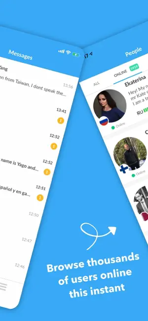

InterPals 对比评测：语言交换社区里的老牌选手，免费是最大优势也是最大包袱
从 2017 年登陆移动端至今，InterPals 在语言交换这个品类里始终占据着一个"免费社区"的独特位置。本文从安全工具、多端体验、账号维护三个维度拆解它的差异化优势，同时也不回避骗局泛滥这个老问题。
语言交换这个品类在中文互联网上始终是个小众话题——想学外语的人有需求，但愿意花时间跟陌生人笔谈的比例不高。InterPals 是我接触过的同类工具里最"老牌"的一家，2017 年 3 月就登陆了 App Store，它的官网至今保持着免费开放的策略，已经在这个赛道里跑了快十年。它既不是最早的，也不是用户量最大的，但"完全免费开放 + 覆盖近十种界面语言"这条组合，让它在同类工具里始终有一个独特的位置——尤其是学生党、预算有限的学习者，几乎绕不开它。
但免费社区的代价也写在脸上：应用商店评论区里，抱怨骗子和垃圾搭讪的差评集中程度，在我用过的同类工具里排得上号。这不是什么新问题，从社区规模起来的那一天就存在，官方的应对方式也一直是"工具交给你，识别靠自己"——好消息是，这些年它攒出了一套相当扎实的安全防御工具箱，组合起来用的话，防护效率比你想象的高。
它的三个差异化亮点
一、安全工具的"零对话防御"组合拳
这是 InterPals 跟同类社区拉开差距的地方。别的工具要么只给一个简单的拉黑按钮，要么把安全设置藏得很深，InterPals 把三层防线拆得清清楚楚，而且每一层都能独立运作。
最底层是意向标签——注册时你要填"想找什么"的偏好，比如"语言交换伙伴""笔友"，把标签设窄之后，选了"恋爱""调情"意向的用户根本没法联系你。这一层是第一道筛子，挡掉的是预期不合的人，不是坏人，但能大幅减少垃圾接触的源头。
中间层是隐私设置里的搜索隐身——"把自己从笔友搜索结果中移除"这个开关，很多用户没意识到它有多好用。找到足够的笔友之后想歇一阵、收到过多垃圾搭讪想清理期、或者语言练成要告别，随时可以打开，朋友还能找到你，但陌生人搜不到。比注销账号温和得多，也比硬扛着舒服得多。
最外层是拉黑 + 举报的组合。拉黑可以从对方主页一键完成，被拉黑的人无法再发消息、无法查看资料。举报之后官方有自动化系统配合管理员处理，骗术模式高度重复，官方安全中心甚至把六类常见信号整理成了清单——要钱、快速升温、拒绝视频、引去站外、文案复制感、可疑链接，全部列在明面上。三层叠加之后，"零对话防御"这个说法真的不是口号：遇到不适接触，拉黑 → 举报 → 检查标签 → 必要时短暂隐身，全程不需要跟对方说一句话。
二、多端覆盖 + 追赶现代体验的节奏
很多同类工具要么只有网页版，要么只有移动端，InterPals 两端都做了，而且更新节奏跟上了近年的一些现代细节。
iOS 端的安装直接从官方下载拿就行，版本迭代也很能说明问题：2025 年 8 月加了深色主题，2026 年 1 月又重设计了消息输入框、登录页、通知角标和主页操作按钮——输入框自动增高、录音上滑锁定这些小功能，在聊天应用里不算新鲜，但放在一个主打语言交换的社区里，说明团队在认真打磨体验。界面语言这些年也从英语一种扩到了七种：俄语、西班牙语、法语、土耳其语、德语、意大利语陆续补齐，这对非英语母语用户的体验提升是肉眼可见的。
iPad 用户有一个小坑要注意：商店页面标注"专为 iPhone 设计"，iPad 上能装能用，但界面是按 iPhone 布局缩放的，没有专门的 iPad 适配版。介意这一点的话，iPad 浏览器开网页版反而更舒服。
三、账号维护的设计够扎实
忘记密码是最高频的账号问题，InterPals 为它准备了专门的找回通道——输入注册邮箱，收重置邮件，点链接设新密码，流程简单清晰。而且官方特意提醒了一点：不要重新注册，重开账号违反单账号政策，原有朋友和私信全部作废。
重置邮件收不到的排查清单也列得很细：先翻垃圾箱，再确认邮箱填对没，稍等再重发别连点，最后才是走反馈表单。这些都是真正踩过坑的人会遇到的边角情况，能在interpals文档里列出来，说明官方对账号流失的重视程度不低。
它的取舍：免费的代价与社区定位
说了好的，也得说不好的。InterPals 的几个"先天不足"，本质上都来自它"免费开放"的定位。
最大的代价就是骗局泛滥。应用商店评论区里，"要钱""快速升温""引去站外"这些剧本的差评，集中程度在同类社区里排得上号。官方安全中心自己也列了六类骗术信号，斩钉截铁地说"这些全都是骗局"——但系统兜底永远不如自己会识别，精致资料不等于真人，头像是普通生活照的反而更可信，这两条心态上的提醒比任何工具都重要。
另一个取舍是社区定位的明确性。InterPals 是笔友社区，不是约会应用，也不是即时通讯软件。如果你期待的是"匹配到合适的人然后高频聊天"，那大概率会失望——它的交互节奏更慢，更像写信而不是发微信。反过来，如果你本来就是想找一个能长期笔谈、系统学习外语的伙伴，这个慢节奏反而是优点。
还有一个小问题：iPad 没有专门适配版，重度 iPad 用户需要考虑网页版。
选购结论
什么样的人适合用 InterPals？
- 学生党或预算有限的学习者：免费是硬优势，同类付费工具的年订阅费不低，InterPals 完全能覆盖"找语言交换伙伴"的核心需求；
- 愿意花时间筛选的人：免费社区的垃圾接触是客观存在的，但三层安全防线用起来之后，实际筛选效率比你想象的高；
- 喜欢慢节奏笔谈的人：它不是即时通讯工具，习惯了写信式的交流节奏反而舒服。
什么样的人选别的？
- 只想要即时匹配、高频聊天的人：同类有专门的语言交换即时通讯应用，体验会更对路；
- 不想处理骗子识别、只想要纯净社区的人：付费社区的用户质量通常更可控，但也要接受成本；
- 重度 iPad 用户：没有专门适配版这一点，在意的话直接网页版。
我的推荐语是：如果你在找一个免费、多端、安全工具到位的语言交换社区，InterPals 值得试——但请先花十分钟把三层安全防线的设置摸清楚，这是用好它的前提。
